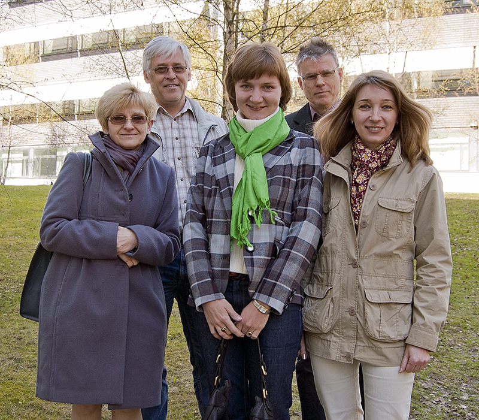

 |
Boguslawa Dobek Ostrowska, Professor, University of Wroclaw
Gunnar Nygren, Professor, Södertörn University Maria Anikina, PhD, Moscow State University Jöran Hök, PhD, Södertörn University Elena Johansson, PhD, Södertörn University/Moscow State University |
| Faculty of Social Sciences, Wroclaw University, Poland | |
| Faculty of Journalism, Lomonosov Moscow State University, Russia | |
|
School of Social Sciences, Sodertorn University, Sweden |